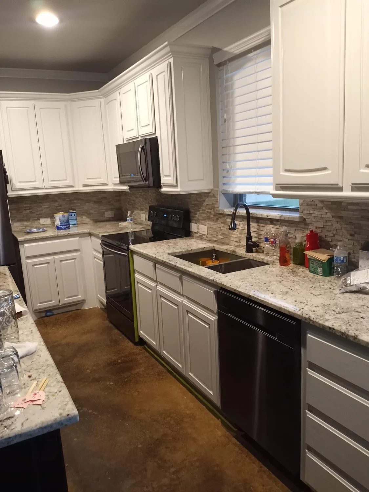
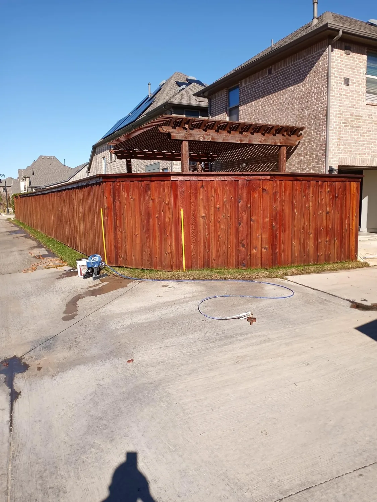
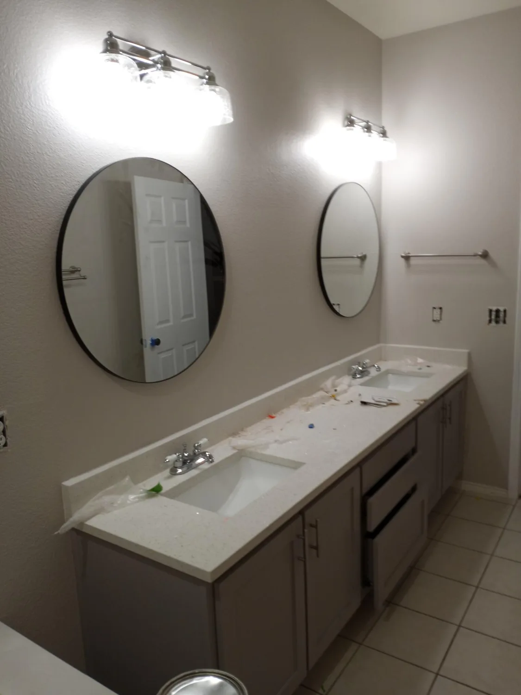
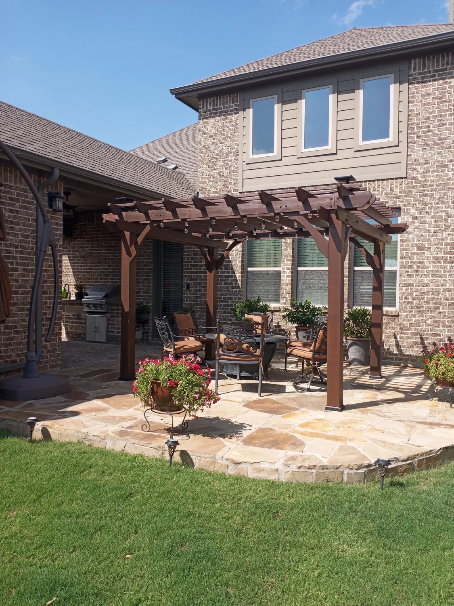
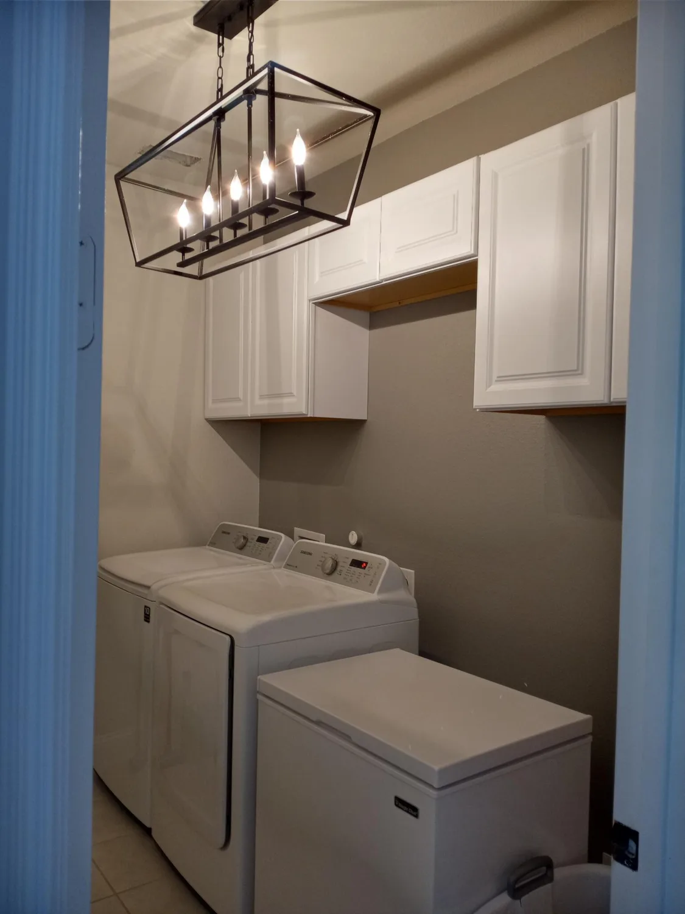
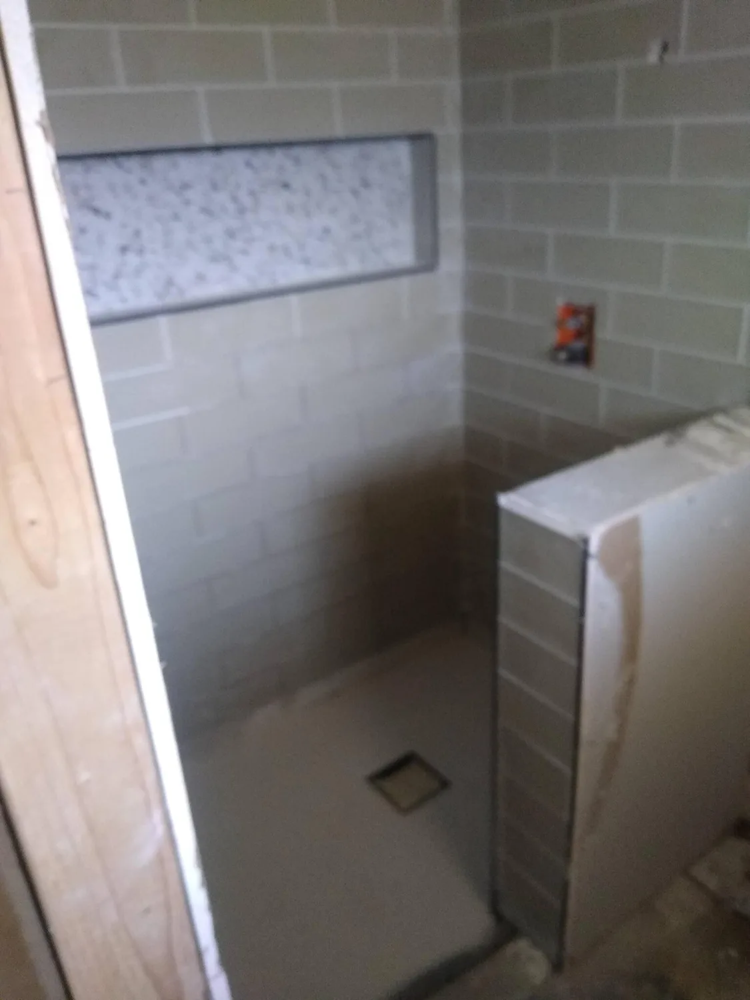

Jose handles tile, fences, screens, faucets and paint across the Metroplex, with reasonable quotes and before-and-after photos.
Call (469) 674-1380





Photos: JV’S Home Remodeling’s public Nextdoor gallery.
He was very professional and reliable and am happy with repairs that he made. He takes pride in his work and is conscientious about doing it correctly.
K. P., Arlington · Nextdoor recommendation